Daar is 'n strategiese rede waarom ons die eenheid oor vuurpyle hier ingesluit het: as ons hierdie eenheid gelos het vir die laaste 2 weke van die jaar, sou kinders dalk nie die geleentheid gekry het om 'n tegnologie projek te doen nie.Hulle mag dalk iets op hulle eie by die huis maak, maar dit is nie 'n tegnologie projek nie. Die tegnologie is in die ondersoek, ontleed en ontwerp. Jy het tyd nodig om hulle deur die proses te lei.
Die NCS patroon van tegnologie projekte is ook hierin. Jy kan leerders hieraan herinner:
O is om die probleem wat party mense het te ondersoek, bestaande produkte te ondersoek en die konsepte en vaardighede wat jy gaan nodig hê om die probleem op te los te ondersoek.
Die tweede O is vir ontwerp - dit beteken dat jy dit wat jy geleer het uit jou ondersoeke moet gebruik om aan goeie maniere te dink om die probleem op te los.
M is vir maak - wanneer jy jou model maak, gebruik jy materiale en gereedskap, jy laat jou model mooi lyk en jy wys vir jou onderwyser wat jy uit jou ondersoek geleer het. (Let op dat meeste kinders met hulle hande ontwerp, nie net met potlood en papier nie. Hulle kry nog idees terwyl hulle met die materiale werk en so verbeter die ontwerp. Daarom kan ons ontwerp en maak as min of meer dieselfde stadium van die projek beskou.)
E staan vir evalueer - na jy jou model gemaak het om die probleem op te los, moet jy vra of dit werk? Kan ons 'n beter een maak?
K staan vir kommunikasie - jy moet vir ander mense wys hoe jy besluit het op die oplossing vir die probleem. Jy moet jou idees neerskryf en sketse maak daarvan. (Die leerders moet deur die loop van die projek teken en skryf oor die projek. Moenie die skryfwerk tot die einde los nie; hulle gaan dit op daardie stadium vervelig vind. Leerders hou daarvan om oor hul eie idees te skryf; hulle hou daarvan om hul nuwe idees neer te skryf - dit is 'n groot pluspunt van tegnologie in die skool. 'n Tegnologie projek gee vir kinders 'n rede om te lees en skryf. En so kan ons die geletterdheidsprobleem deur wetenskap en tegnologie aanspreek.)
Jojo, Sophie, Farrah en Tom kyk na 'n vuurwerkvertoning by 'n musiekfees. Vuurpyle skiet in die donker hemel op en wanneer hulle ontplof skiet hulle 'n stroom vonke uit.
Jojo vra sy vriende: "Kan een van daardie vuurpyle maan toe gaan?"
Tom antwoord: "Nee, die maan is 384 000 kilometer weg - dit is te ver!"
Farrah sê: "Ek wil nie vuurpyle op die maan hê nie - dit is so mooi nes dit is."
Sophie sê toe: "Maar daar WAS al mense! Hulle het 'n vuurpyl gebruik om daar te kom. Hulle het op die maan rondgeloop en selfs maanklippe teruggebring."
Die Thunderbolt Kids sit nog so 'n bietjie en kyk na die pragtige vuurwerke met die maan in die agtergrond.
Farrah breek die stilte: " Ek het 'n video gesien van ruimtevaarders op die maan. Hulle het so maklik daar rondgespring, omdat hulle minder weeg op die maan."
Jojo het 'n goeie idee: "Kom ons maak model vuurpyle. Ons kan ons verbeel dat ons iemand maan toe gaan stuur!"
Almal stem saam en Tom sê selfs: "Ek wil 'n klein ruimtevaarder op my vuurpyl hê - ek sal my naam, Tom, op hom skryf!"
Die Thunderbolt Kids wil nou vuurpyle ontwerp en maak. Hulle vuurpyle sal klein modelle van mense op hulle hê. Julle moet hulle help om dit te doen.
Questions:
Question:
Skryf twee goed neer wat jy weet van vuurpyle.
Solution:
Hulle gaan in die lug op; hulle beweeg vanself; hulle beweeg vinnig; party vuurpyle vervoer mense; party vuurpyle het al maan toe gegaan; gas of rook kom by die agterkant van die vuurpyl uit.
-------------------
Ons moet nou 'n ontwerpsopdrag vir ons projek skryf. 'n Ontwerpsopdrag sê wat jy van plan is om te doen en te ontwerp. Dit is gewoonlik redelik kort.
Questions:
Question:
Skryf twee sinne oor wat jy gaan doen? Dit is jou ontwerpsopdrag.
Solution:
-------------------
Hoe werk vuurpyle?
tuit
ondersoek
ontwerp
sisteem
foelie
brei uit
Die Thunderbolt Kids moet 'n paar goed uitvind voor hulle hul vuurpyle kan begin ontwerp. In hierdie afeling gaan die Thunderbolt Kids vuurpyle ondersoek. In tegnologie moet 'n ontwerper uitvind wat mense alreeds gemaak het en uitvind hoe daardie dinge werk. Ons gebruik die woord "ondersoek" wat beteken om uit te vind.
Sophie lees oor vuurpyle wat in die verlede gebou is. Sy ondersoek dit!
Ondersoek vuurpyle wat maan toe gegaan het.
Mense het vuurpyle gebruik om in die ruimte in te gaan en na die maan te reis. In 1969 het 'n vuurpyl, met die naam Apollo 11, drie mans vir die eerste keer maan toe geneem. Blaai na die bladsy met "Maanfeite" in die hoofstuk oor die maan en kyk na die prente en lees oor die reis.
Die opdrag vereis dat leerders die inligting wat hulle nodig het moet vind. Moet dit nie vir hulle gee nie; hulle moet leer om teks te deursoek vir inligting. Gee vir hulle genoeg tyd om deur Eenheid 5 te soek vir die dele wat hulle nodig het. Jy moet leerders wat nie kan lees nie saam met leerders wat kan lees indeel.
-------------------
Questions:
Question:
Het die hele vuurpyl maan toe gegaan?
Solution:
Nee
Question:
Watter deel van die vuurpyl is maan toe?
Solution:
Net die klein ruimtetuig aan die punt van die vuurpyl.
Question:
Hoe ver het die ruimtetuig gevaar om die maan te bereik?
Solution:
384 000 kilometer. Dit het eintlik verder as dit gegaan omdat dit nie in 'n reguit lyn beweeg het nie. Die roete was geboë omdat die maan 'n bewegende teiken was.
-------------------
Ondersoek vuurpylsisteme
Sodra ons die aarde se boonste atmosfeer verlaat het, is daar nie lug van daar tot by die maan nie. Vliegtuie se vlerke werk net as hulle deur lug beweeg.
Questions:
Question:
Kan 'n vliegtuig maan toe vlieg? Gee 'n rede vir jou antwoord.
Solution:
Nee, want hul vlerke sal nie in die ruimte werk nie.
-------------------
Vuurpyle kan dus nie op dieselfde manier as wat vliegtuie op die aarde deur die lug beweeg, in die ruimte beweeg nie. Vuurpyle moet dus op 'n ander manier beweeg. Kom ons probeer 'n eenvoudige model van 'n vuurpyl maak om te kyk hoe dit beweeg.
Teacher's Guide:
Die volgende aktiwiteit stel die leerders bekend aan die idee dat 'n vuurpyl gas gebruik om vorentoe te beweeg. Die gas slaan aan die brand en ontsnap van onder af. Dit beweeg die foelie in die teenoorgestelde rigting, net soos 'n vuurpyl wanneer dit lanseer word en in die ruimte vaar. Verduidelik dit vir die leerders tydens die aktiwiteit.
-------------------
Activity: Maak 'n vuurpyl van 'n vuurhoutjie.
Maak 'n vuurpyl van 'n vuurhoutjie.
BENODIGHEDE:
'n Boksie vuurhoutjies.
vire reghoeke van bladaluminium (aliminiumfoelie), 4cm by 8cm.
a speld
'n skuifspeld
INSTRUKSIES:
Sit die vuurhoutjie op die foelie vierkante en sit die speld langs die vuurhoutjie.
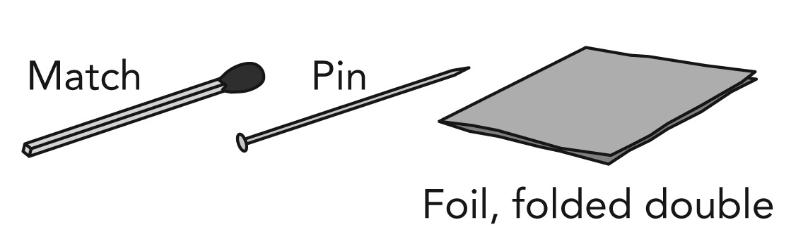
Draai die foelie om die speld en die vuurhoutjie se kop.
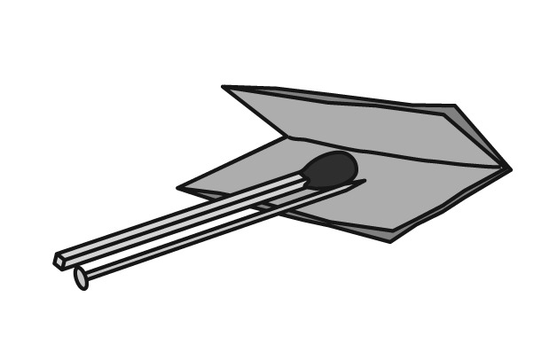
Trek die speld uit. Dit los 'n klein gaatjie waardeur die gasse kan ontsnap.
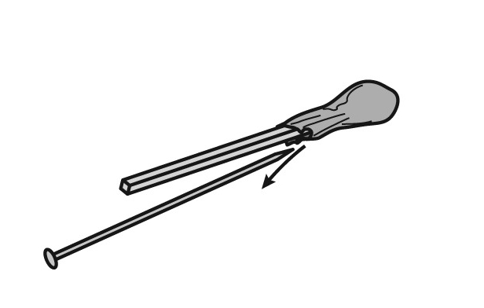
Jy het nou 'n vuurpyl. Dit is amper gereed om te lanseer. Jy het nog net 'n lanseerstruktuur nodig.
Buig die skuifspeld om 'n struktuur soos in die prent te maak.
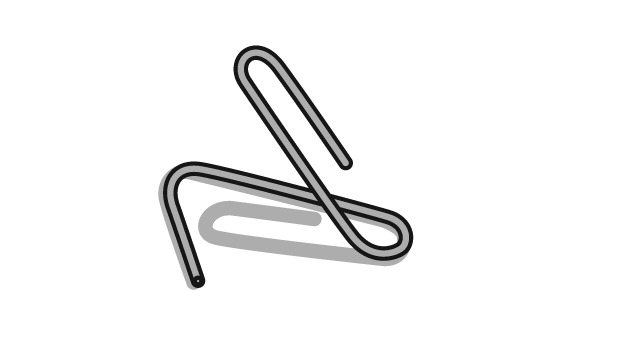
Sit jou vuurhoutjie-vuurpyl op die lanseerstruktuur. Maak seker dat die vuurpyl weg van mense af wys.
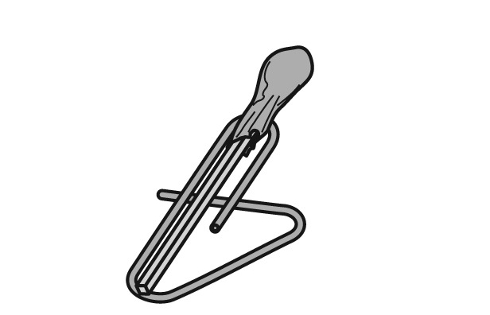
Trek die ander vuurhoutjie en maak die kop van jou vuurpyl warm.
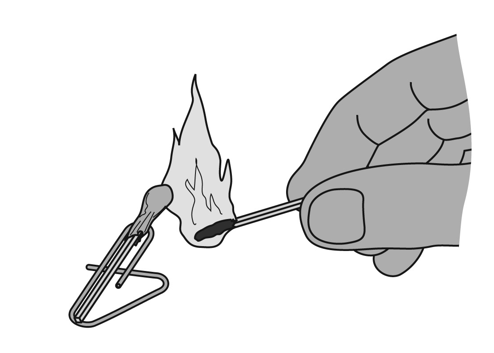
Kyk wat gebeur.
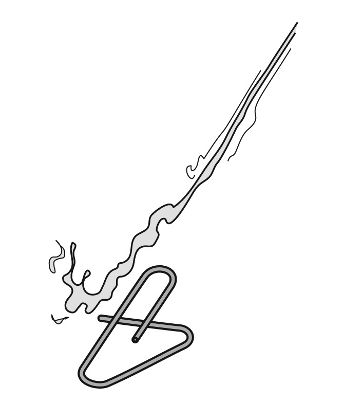
VRAE:
Question:
'n Vuurpyl het brandstof nodig. Brandstof stoor energie. (Onthou jy wat ons in Kwartaal 3 geleer het oor energie stoor?) Waar is die energie in die vuurpyl gestoor?
Solution:
Die energie is in die kop van die vuurhoutjie gestoor.
-------------------
Wat het ons geleer uit hierdie klein model van 'n vuurpyl wat ons met 'n vuurhoutjie gemaak het? Waneer die vuurhoutjie se kop brand, gee dit warm gasse af. Die warm gasse sit opwaarts, sywaarts en afwaarts uit. Om uit te sit beteken om meer spasie te gebruik.
Die gasse wat afwaarts uitsit ontsnap deur die tuit aan die agterkant van die vuurpyl. Die warm gasse skiet by die tuit uit en stoot daarom die vuurpyl opwaarts.
Questions:
Maak 'n skets van die vuurpyl wat opwaarts beweeg. Sit die volgende byskrifte by jou skets: die neus van die vuurpyl; die stert van die vuurpyl; tuit, warm gasse wat uitkom. Farrah breek die stilte: " Ek het 'n video gesien van ruimtevaarders op die maan. Hulle het so maklik daar rondgespring, omdat hulle minder weeg op die maan."
-------------------
Die vuurpyl gaan opwaarts omdat die warm gasse afwaarts by die tuit uitskiet. Hoe vinniger die gasse afwaarts spuit, hoe vinniger gaan die vuurpyl opwaarts.
As die tuit baie groot is, kan die gasse te maklik uitkom en dus nie baie vinnig uitskiet nie. As die tuit te klein is, kan die gasse nie vinnig uitkom nie. Wat is dan die beste grootte vir die tuit? Jy kan verskillende groottes tuite probeer vir die vuurhoutjie-vuurpyl om uit te vind watter een die beste werk.
As jy iets oor en oor toets en verander om die beste oplossing te kry, sê 'n mens jy toets deur "probeer-en-tref".
Questions:
Question:
Wat het jy uit die ondersoek geleer?
Solution:
-------------------
Ondersoek ballon-vuurpyle.
Het jy al ooit 'n ballon opgeblaas en dan laat los? Hoe het dit gevlieg? In 'n reguit lyn? Seker nie, né? Dit het seker oral oor die plek gevlieg! Dit is nie 'n goeie idee vir 'n vuurpyl nie. Hoe kry ons dit reg om dit reguit te laat vlieg?
Ek het 'n idee om die ballon te laat reguit vlieg. Kyk na die volgende aktiwiteit.
Activity: Help die ballon om reguit te vlieg.
Help die ballon om reguit te vlieg.
BENODIGHEDE:
2 ballonne
vislyn, omtrent 10m lank
plastiekstrooitjie
kleeflint
INSTRUKSIES:
Maak die vislyn aan iets vas aan die een kant van die vertrek.
Sit die ander punt van die vislyn deur die plastiekstrooitjie.
Maak nou die vislyn aan die venster se knip of handvatsel vas. Beweeg die venster so dat die vislyn reguit en styf gespan is.
Blaas die ballon op totdat dit die grootte van 'n brood is en maak dit dan met die kleeflint aan die strooitjie vas. Kyk na die diagram hier onder.
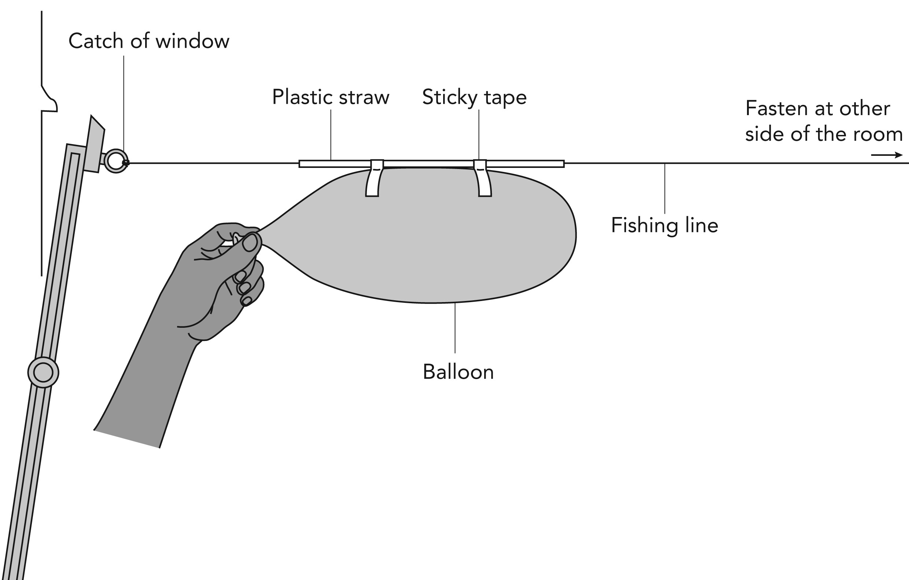
Span die vislyn styf.
Laat los die ballon! Die ballon beweeg reguit teen die vislyn af.
Blaas nou die ballon op totdat dit so groot soos 'n sokkerbal is. Laat los.
Blaas die ballon tot verskillende groottes op. Jy kan die hoeveelheid kere wat jy lug in die ballon blaas as die veranderlike gebruik, byvoorbeeld 3 blase, 5 blase, 7 blase. Laat los elke keer die ballon en meet met 'n liniaal hoe ver dit teen die vislyn af beweeg het. Teken jou resultate in die tabel hier onder op.
Grootte van die ballon (hoeveel keer moes jy blaas om dit op te blaas)
Afstand beweeg (cm)
Gebruik die inligting om 'n lyngrafiek te trek. Die hoeveelheid keer wat jy moes blaas is wat jy verander, daarom gaan dit op die onderste, horisontale as - die x-as. Die afstand wat die ballon teen die vislyn af beweeg het, hang af van hoeveel keer jy in die ballon geblaas het. Dit gaan op die vertikale as - die y-as. Jou onderwyser sal jou help en wys hoe om die eerste punt te trek. Gebruik die spasie hier onder om jou grafiek te trek.
VRAE:
Question:
Het die ballon anders beweeg toe jy dit klein opgeblaas het as toe jy dit groter opgeblaas het?
Solution:
Ja. (Dit het elke keer teen die vislyn af beweeg, maar teen verskillende snelhede en vir verskillende afstande.)
Question:
Wat is die verskil tussen die manier wat die ballon beweeg het toe dit klein opgeblaas was en toe dit groot opgeblaas was?
Solution:
Wanneer dit groot opgeblaas is, beweeg dit vinniger. Die rede daarvoor is dat jy meer energie in die ballon gestoor het.
Question:
Vuurpyle wat ruimtevaarders maan toe neem gaan op, nie kant toe nie. Dink aan 'n manier om die vuurpyl opwaarts en reguit te laat beweeg. Die prent hier onder
Hoe goed vlieg die ballon as jy die vislyn so hou?
Solution:
Question: Die volgende figuur wys jou nog 'n manier om die ballon te laat reguit beweeg. Maak 'n ballon-vuurpyl en kyk of dit reguit vlieg. 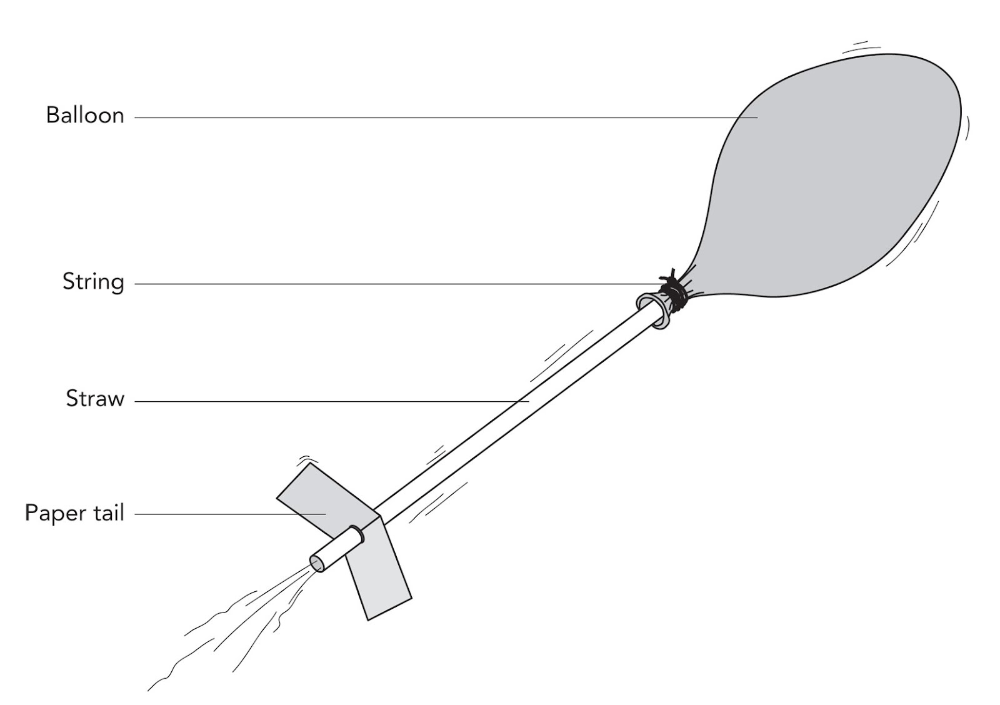
Sal die sisteem die vuurpyl reguit laat gaan?
Solution:
-------------------
Ons het nou al ondersoeke gedoen oor vuurpyle en hoe hulle beweeg en werk. Ons moet nou 'n ondersoek doen oor die plek waarheen ons wil gaan - die maan!
Activity: Ondersoek die maan.
Ondersoek die maan.
INSTRUKSIES:
Jy moet uitvind oor die maan.
Jy kan "Maanfeite" in Hoofstuk 5 lees.
Beantwoord die volgende vrae.
VRAE:
Question:
Hoe ver is die maan van die aarde af?
Solution:
384 000 kilometer
Question:
Het die maan lug dat jy kan asemhaal?
Solution:
Nee
Question:
Is daar lug tussen die aarde en die maan?
Solution:
Nee
Question:
Kan 'n voël van die aarde na die maan toe vlieg? Gee 'n rede vir jou antwoord.
Solution:
Die voël het lug nodig om asem te haal en daar is nie lug in die ruimte nie. 'n Voël se vlerke werk ook met lug en weereens is daar geen lug in die ruimte nie.
Question:
Kan 'n groot passasiersvliegtuig na die maan toe vlieg? Gee 'n rede vir jou antwoord.
Solution:
Die enjins van 'n passasiersvliegtuig het lug nodig om die brandstof te laat brand en die vlerke werk net wanneer daar lug deurstroom. Daar is nie lug in die ruimte nie, daarom sal nie die enjins of die vlerke werk nie.
-------------------
'n Model van 'n vuurpyl
ontwerp
spesifikasie
Die Thunderbolt Kids gaan vuurpyle ontwerp en maak. Om te ontwerp beteken dat jy jou kennis van iets moet gebruik en mooi moet dink oor die ding wat jy gaan maak.
Teacher's Guide:
Onthou dat ontwerp en maak saam gebeur vir laerskool kinders. Hulle kry idees terwyl hulle besig is om met die materiale te werk en hulle ontwerp met hulle hande, nie net met potlood en papier nie. Hulle verander hulle idees terwyl hulle werk. Ons kan hulle dus nooit forseer om iets te maak wat lyk soos hulle eerste skets nie. In die industrie sal ontwerpers sketse maak en dan 'n prototipe maak. 'n Prototipe is nie die finale ontwerp nie, maar is iets wat hulle gebruik om hulle ontwerpe te toets. Hulle maak dan verbeteringe aan die prototipe. Ons gaan deur die loop van die hoofstuk deur 'n uitgebreide ontwerpsproses gaan. Aan die begin het ons 'n behoefte identifeseer om iets te ontwerp aangesien die Thunderbolt Kids 'n vuurpyl wou hê om mee maan toe te gaan. 'n Kort ontwerpsopdrag is geskryf. Ons het 'n klomp tyd spandeer om te ondersoek en ander aktiwiteite gedoen wat deel is van hierdie proses. Dit wys ook dat wetenskap en tegnologie saamloop en dat wetenskaplike ondersoeke gebruik kan word om besluite te neem oor jou ontwerp. Nou dat ons klaar ondersoek het, moet ons in die volgende afdeling oorgaan na die Ontwerp, Maak, Evalueer en Kommunikasie dele van die ontwerpsproses.
-------------------
Activity: Ontwerp, maak en evalueer 'n vuurpyl.
Ontwerp, maak en evalueer 'n vuurpyl.
ONDERSOEK
Die eerste stap is om te ondersoek. Ons het al 'n paar ondersoeke gedoen. Kyk weer na daardie ondersoeke en hersien wat jy geleer het.
ONTWERP:
Jy moet nou die inligting wat jy gekry het gebruik om 'n ontwerp vir jou vuurpyl te maak.
Jou vuurpyl het die volgende spesifikasies:
jou vuurpyl moet vanself beweeg
jou vuurpyl moet verder as 1 meter beweeg, opwaarts of sywaarts.
jou vuurpyl moet 'n klein papiermodel van 'n ruimtevaarder dra.
die ruimtevaarder moet iemand in die groep se naam hê.
jy moet die vuurpyl in die klas maak, nie by die huis nie.
Beantwoord hierdie vrae:
Wat moet jy ontwerp?
Wat sal die grootte en vorm van jou vuurpyl wees?
Watter materiale gaan jy gebruik om jou vuurpyl te bou? Maak 'n lys van die materiale wat jy gaan nodig hê. Die prent hier onder wys van die materiale wat jy kan gebruik. Jy hoef nie al die materiale te gebruik nie en jy mag ander materiale, wat nie in die prent is nie, gebruik.
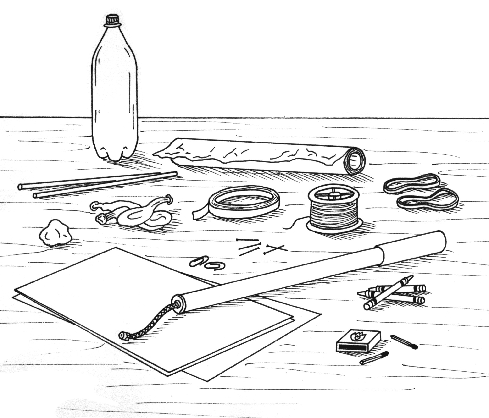Die goed wat jy kan gebruik om jou vuurpyl te maak.
Teacher's Guide:
Moenie vir jou leerders sê dat hulle net sekere materiale mag gebruik nie. Onthou, ons wil hulle kreatiwiteit aanmoedig. As hulle opgewonde raak oor hulle projekte, sal hulle allerhande materiale probeer. Ons moet hulle wel sê dat hulle alles wat hulle bring in die klas moet gebruik. Ons moet hulle ontwerp-en-maak vaardighede assesseer - nie hulle ouers s'n nie!
-------------------
Watter gereedskap gaan jy nodig hê om jou vuurpyl te maak?
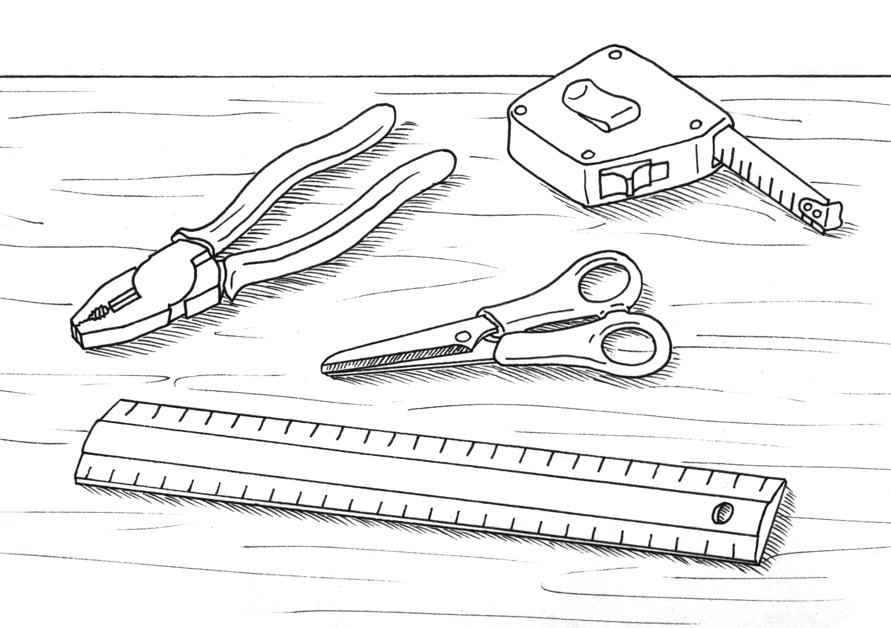Hierdie is van die gereedskap wat jy kan gebruik.
Is daar enige ander spesifikasies of beperkinge vir jou vuurpyl waaraan jy kan dink?
Jy moet nou 'n ontwerp teken vir jou vuurpyl. Gebruik rofwerkpapier om jou eerste ontwerpe te maak. Sodra jy tevrede is met jou ontwerp kan jy die spasie hier onder gebruik om jou ontwerp te teken. Maak byskrifte vir jou skets en wys watter materiale jy vir die verskillende dele gaan gebruik.
Terwyl jy jou vuurpyl maak, gaan jy beter idees kry. Kom na die tyd terug en maak sketse van die idees op die onderste helfte van die bladsy wat wys wat jy uiteindelik besluit om te maak.
MAAK:
Maak nou jou vuurpyl in die klas!Jy moet die vuurpyl volgens jou skets maak en die materiale gebruik wat jy identifiseer het.
Sodra almal klaar hul vuurpyle gemaak het, kan julle hulle toets om te kyk of hulle 1m in die lug op kan gaan. Wys vir die klas hoe jou vuurpyl beweeg. Die klas sal vra hoe ver dit kan gaan en hulle gaan soek vir die klein ruimtevaarder wat op die vuurpyl ry. Het iemand se vuurpyl hoër as 'n meter gegaan?
Teacher's Guide:
Hier is baie fasilitering nodig. Toets miskien net een vuurpyl op 'n slag sodat die leerders kan sien wat die res gedoen het en van mekaar kan leer.
-------------------
EVALUEER:
Beantwoord die volgende vrae oor die vuurpyl wat jy gebou het na jy dit getoets het.
Waar het die vuurpyl sy energie gekry om te kan beweeg?
Hoeveel sentimeter het jou vuurpyl beweeg?
Het jou vuurpyl in 'n reguit lyn beweeg?
Wat kon jy doen om 'n beter vuurpyl te bou?
KOMMUNIKEER
Onthou die laaste deel van die ontwerpsproses is om te kommunikeer wat jy uitgevind het, sodat die ander kan leer uit wat jy gedoen het.
Skryf 'n paragraaf hier onder waarin jy die Thunderbolt Kids vertel van die vuurpyl wat jy gebou het, wat gewerk het en wat nie gewerk het nie, sodat hulle kan leer uit wat jy gedoen het.
-------------------Ek wil regtig weet wat jy geleer het oor vuurpyle ontwerp!
Vliegtuie kan nie in die ruimte vlieg nie, omdat daar nie lug in die ruimte is nie.
Vuurpyle kan deur die ruimte beweeg.
Mense het vuurpyle gebruik om ruimte toe te gaan en na die maan te reis.
Vuurpyle stoor energie om te beweeg.
Revision:
Question:
We cannot fly to the Moon in an aeroplane. Give a reason why we cannot.
Solution:
In die ruimte is daar nie lug nie. Vliegtuie se vlerke werk net waar daar lug is.
Question:
Verduidelik hoe 'n vuurpyl beweeg.
Solution:
'n Vuurpyl beweeg deurdat warm gasse by die bek van die vuurpyl uitgeforseer word. So word die vuurpyl vorentoe gedryf.
Question:
Gee 'n rede waarom die bek van die agterkant van die vuurpyl klein moet wees.
Solution:
Die gasse moet baie vinnig daaruit kan kom.
Question:
In watter jaar het die eerste man met behulp van'n vuurpyl op die Maan geland?